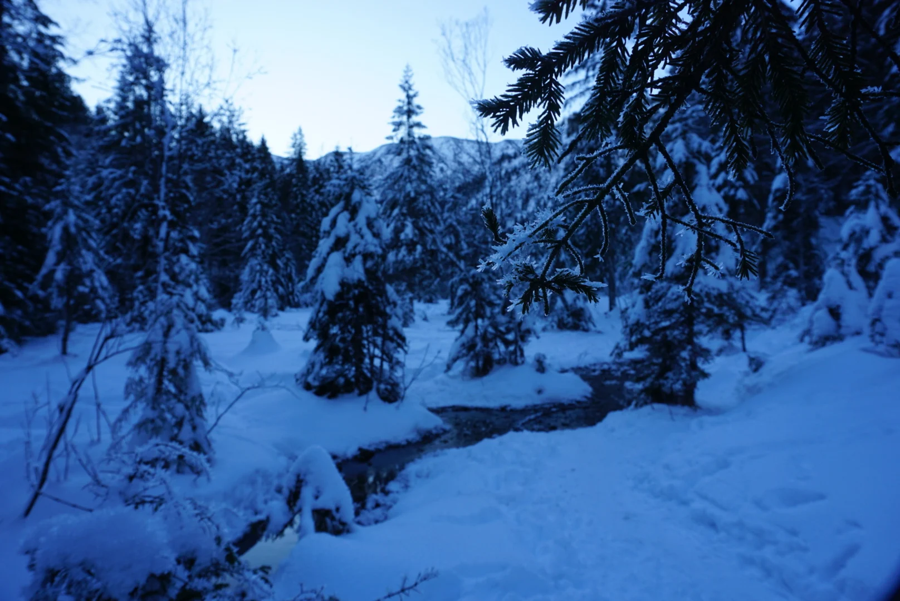
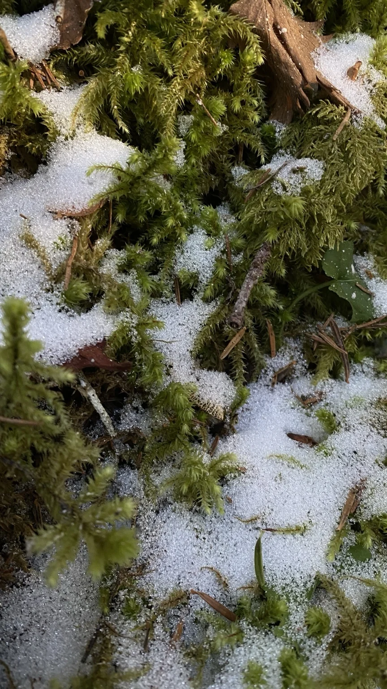

DER WALDMOMENTE ADVENTSKALENDER
Waldverbunden.
24 Türchen voller Natur und Geschichten.
Gemeinsam mit Partnerinnen,
die unsere Liebe zum Wald teilen.
JEDEN TAG EINE ENTDECKUNG
Der Dezember hat
24 kleine Geheimnisse.
Ein Foto. Eine Geschichte. Eine besondere Idee.
Hinter jedem Türchen wartet etwas anderes.
Ein geöffnetes Türchen bleibt für dich offen.

WALDVERBUNDEN
Was uns verbindet,
wächst draußen.
Dieser Adventskalender bringt Waldmomente und Partnerinnen zusammen, die ihre Liebe zum Wald auf ganz eigene Weise zeigen. In Büchern, in ihrer Arbeit und in den Dingen, die sie gestalten.
Im Dezember öffnen wir hier ihre Türchen.
Waldmomente auf Instagram ↗Schön, dass du hier bist.
LISSI · WALDMOMENTE